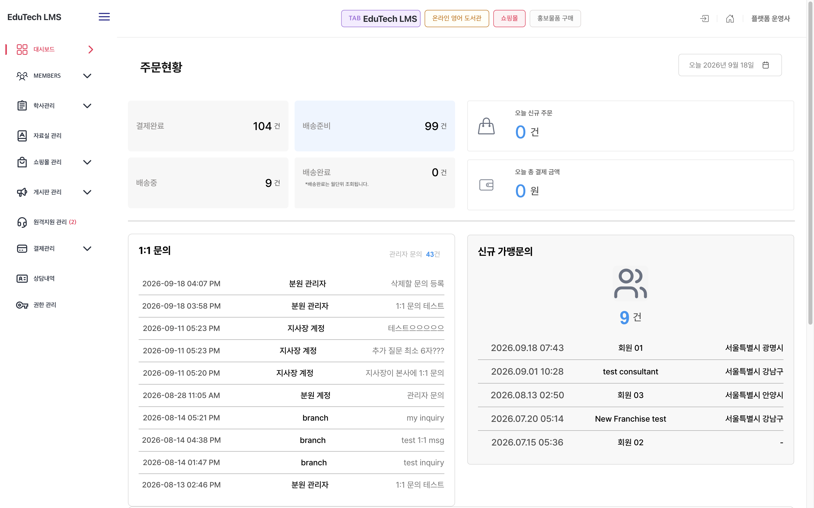

대형 어학교육 플랫폼 전면 리뉴얼 (토킹클럽)
4개 시스템(관리자·이용자·홈페이지·앱) 통합 리뉴얼 총괄. 배포 번들 역추출로 명세 누락 19개 화면을 발굴·집필하고, 변경요청 60건을 원천 분류(범위 밖 68%)하여 계약·일정 재협상 근거를 수립했습니다.
41 / 60
68% Out-of-Scope Proven
19 Screens
Missing Specs Restored
99.88%
454,917 Records Migrated